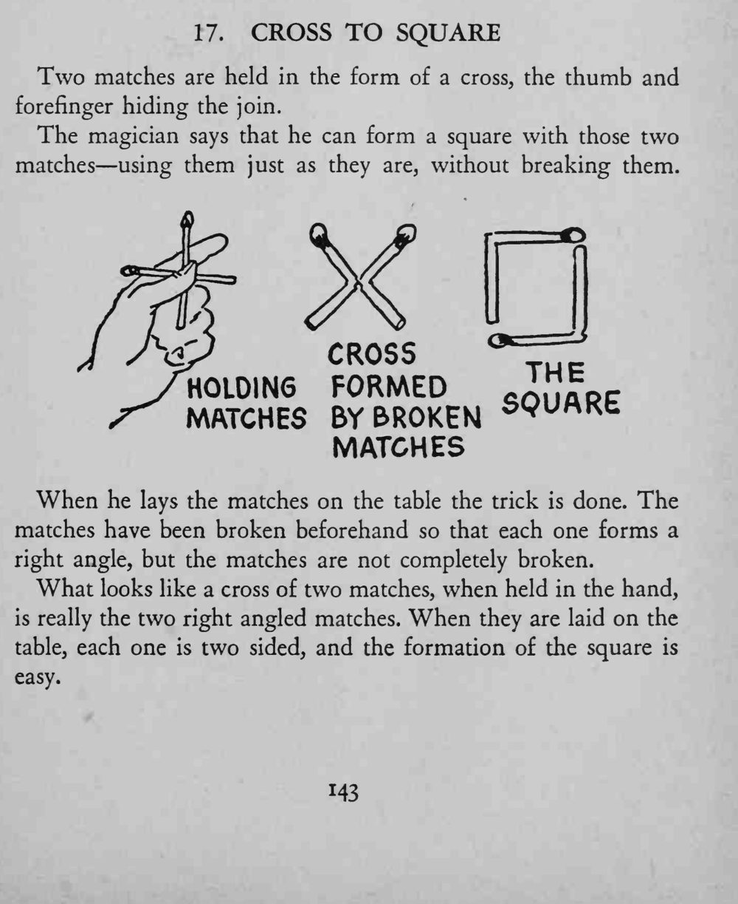
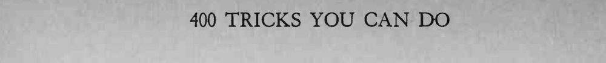

两根火柴在手里摆成一个十字，魔术师说不用折断就能变出正方形，往桌上一放，果然成了方。
折口一定要藏在指间，拿起和放下时手指别松开。


Two matches are held in the form of a cross, the thumb and forefinger hiding the join. The magician says that he can form a square with those two matches using them just as they are, without breaking them. ^vVHKfc When he lays the matches on the table the trick is done. The matches have been broken beforehand so that each one forms a right angle, but the matches are not completely broken. What looks like a cross of two matches, when held in the hand, is really the two right angled matches. When they are laid on the table, each one is two sided, and the formation of the square is easy.